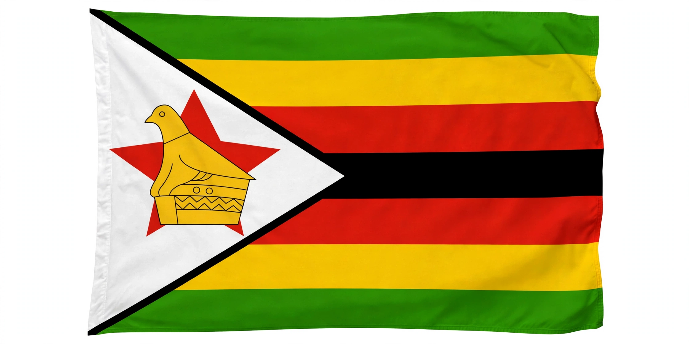

| Republic of Zimbabwe | |
 Flag of Zimbabwe | |
| Capital | Harare |
|---|---|
| Official languages | 16, incl. Shona, Ndebele, English, Chewa, Tswana, Venda, Xhosa |
| Government | Unitary presidential republic |
| Independence | 18 April 1980 (from the United Kingdom, legally) |
| Population | approx. 16 million |
| Currency | Zimbabwe Gold (ZiG) and others |
Zimbabwe, officially the Republic of Zimbabwe, is a landlocked country in Southern Africa, bordered by South Africa, Botswana, Zambia, Mozambique, and Namibia. Its capital and largest city is Harare. The country takes its name from Great Zimbabwe, the medieval stone city that was the capital of the Kingdom of Zimbabwe. About 16 million people live in Zimbabwe; the largest ethnic groups are the Shona (about 82%) and the Ndebele (about 14%).
The territory was home to successive African kingdoms — Zimbabwe, Mutapa, and the Rozvi — and later to the Ndebele kingdom of Mzilikazi and Lobengula. Cecil Rhodes's British South Africa Company colonised the area in the 1890s, naming it Rhodesia. As Southern Rhodesia it became a self-governing colony in 1923. In 1965 Ian Smith's white-minority government unilaterally declared independence from Britain, leading to sanctions and a long liberation war. The Lancaster House Agreement of 1979 ended the war and led to majority-rule elections won by Robert Mugabe's ZANU-PF. Mugabe ruled from 1980 until his resignation in 2017 following a military intervention; Emmerson Mnangagwa succeeded him.
Zimbabwe lies largely on a high plateau (the Highveld) between the Zambezi and Limpopo rivers. It is famous for Victoria Falls on the Zambezi, one of the world's largest waterfalls, and for Hwange and Mana Pools national parks, rich in elephants, lions, and other wildlife. The Eastern Highlands along the Mozambique border are cooler and wetter.
Agriculture (especially tobacco and maize), mining (gold, platinum, diamonds, lithium), and tourism anchor the economy. Fast-track land reform after 2000, hyperinflation that peaked in 2008, and successive currency crises severely damaged output; the economy has relied heavily on the U.S. dollar alongside local currency units, most recently the gold-backed ZiG introduced in 2024.